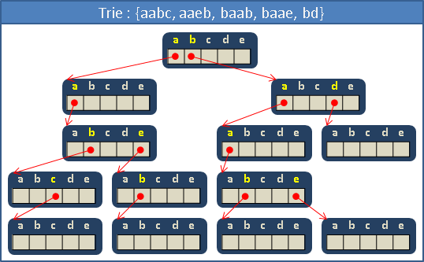
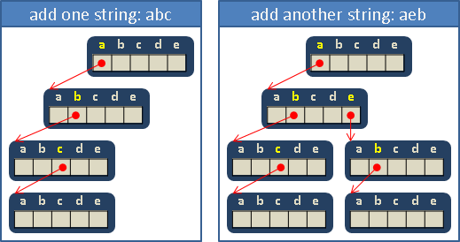
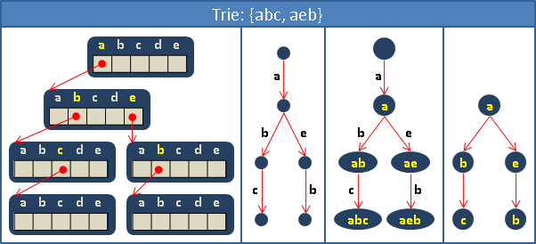
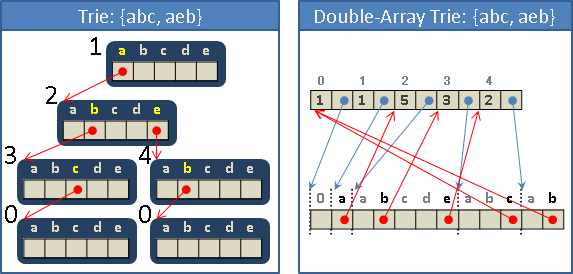
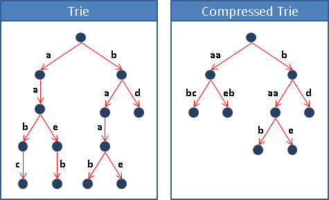
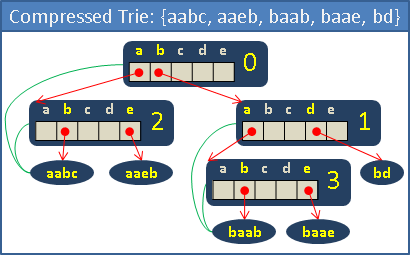

大量String資料結構: Trie
Trie【翻譯成「櫥」似乎不錯】
Trie是一棵特別的樹，一條由根往葉的路徑是一個字串。節點含有陣列，以陣列索引的方式進行紀錄，每一層的節點分別對應字串的每一個字元。
舉個簡單的例子。假設字元只有abcde五種。
儲存字串abc：由樹根往下走，每一層的節點依序對應字串的每一個字元。多出來的樹葉，用來標記字串結尾，可以想成是'\0'。
再儲存字串aeb：開頭相同的部分，歸併在一起。
這種儲存字串的方式，類似於編排字典的方式，減低了檢索單字的困難度。Trie可以想作是多層次的索引表。
相信各位對Trie的儲存方式已經駕輕就熟了。優點是速度飛快，缺點是耗費記憶體。最後提供Trie的常見圖示方式。
UVa 902 10226 10391 10745
設計Trie的節點

ASCII一共有128種字元，一個節點只需要一條128格陣列。
如果遇到abc和abcde這種一個字串是另一個字串的前綴的例子，就無法判斷字串結尾。此時必須用一個變數判斷字串結尾。如此一來也可以儲存空字串了。
如果字串可以重複出現，就用一個變數累計出現次數。
初始化。大功告成。
增加一個字串
時間複雜度是O(S)，其中S是字串的長度。
尋找一個字串（判斷字串存不存在）
時間複雜度是O(S)，其中S是字串的長度。
依照順序印出所有字串
DFS走訪每個節點。時間複雜度等同於Trie的節點數量。
釋放記憶體空間
寫了new而不寫delete是大逆不道的事情！一定要記得寫！
Double-Array Trie
所有節點合併成一條極長陣列，另外用一條陣列記錄節點大小、節點位置。
優點是刪除了Trie的陣列末端空格，缺點是必須動態配置節點大小、節點位置。省空間、費時間。
動態配置節點，大可不必自己實作，可以直接使用malloc/free、new/delete。
Compressed Trie
去掉沒有分岔、呈一直線的節點。
去掉節點之後，字串資訊不完整，必須做點處理：
一、每個節點增加一個數字，記錄當前是第幾個字元。也就是開始分岔的字元。
二、在樹葉裡儲存完整字串。每個節點增加一個指標，記錄當前節點要參考哪一個樹葉的字串。
三、或者，在節點裡儲存片段字串，代價是必須動態配置字串空間大小。省空間、費時間。